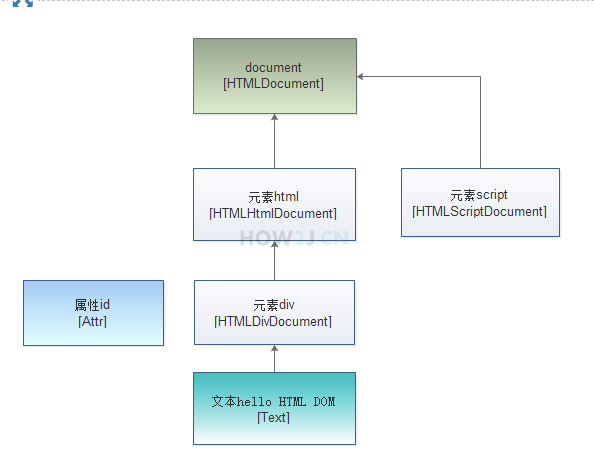

DOM 是 Document Ojecr Model （文档对象模型） 的缩写 dom 是把 html 里面的各类数据 当作 对象 进行操作的一种思路 比如：一个超链， 作为一个dom对象， 就可以使其隐藏， 修改其href指向的地址
示例 1 : 节点的概念
dom 把所有的html 都转换为节点
整个文档 是一个节点
元素 是节点
元素属性 是节点
元素内容 是节点
注释 也是节点
如本例：
通过 document.getElementById 获取id=d1的div 标签 对应的元素节点
然后通过 attributes 获取该节点对应的 属性节点
接着通过 childNodes 获取内容节点

hello html dom